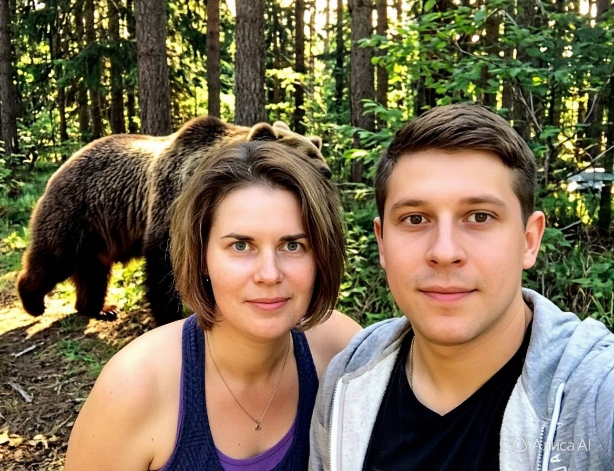
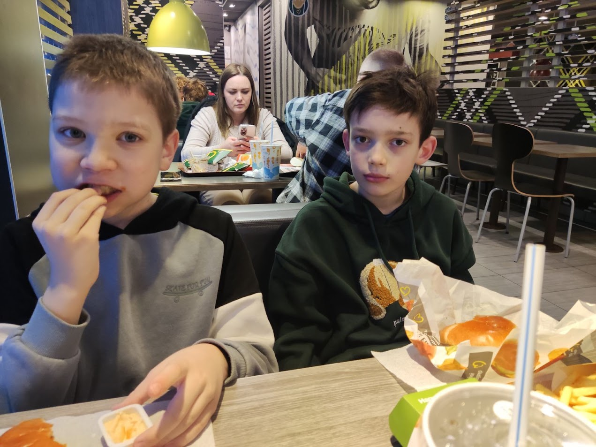

Дикая природа и страсть
Сегодня, 21:40 | Просмотров: 245 812

Необычный инцидент произошел на окраине лесного массива. Свидание молодой пары едва не обернулось трагедией, но в ситуацию вмешался неожиданный фактор — слепая ярость юного романтика.
17-летний местный житель отправился на прогулку в глубь леса со своей одноклассницей. Выбрав уединенную поляну, молодые люди решили устроить пикник. Однако в самый ответственный момент, когда пара слилась в первом романтическом поцелуе, из кустов выломился крупный бурый медведь.
Хищник, привлеченный запахом еды, издал громкий рык, намертво испортив атмосферу. Но реакция парня удивила и его подругу, и самого хозяина тайги.
«Я невероятно испугалась. Но мой парень буквально сошел с ума от злости. Он схватил сухую ветку и бросился на медведя с криками, что тот испортил ему лучший момент в жизни», — вспоминает спутница героя.
Выброс адреналина оказался настолько мощным, что парень развил невероятный напор. Нанеся хищнику несколько сильных ударов бревном по морде, юноша перешел в ближний бой. Опешивший от такой дерзости косолапый принял тактическое решение позорно ретироваться в чащу.
Истории Успеха
Сегодня, 22:15 | Просмотров: 512 043

Эта удивительная история доказывает, что для крупного бизнеса не нужен стартовый капитал или связи. Обычный парень Санечечек смог заработать состояние в миллион долларов, начав с самостоятельной заготовки простых березовых веников.
Все началось три года назад. После уроков в школе Санечечек не шел играть в компьютер, а отправлялся на велосипеде в ближайший лес. Парень вручную срезал березовые и дубовые ветки, аккуратно связывал их дома на балконе и по выходным выходил стоять на местный рынок. Продавая первые веники поштучно, он внимательно изучал, чего именно хотят заядлые любители бани.
Постепенно дело пошло в гору. Санечечек понял, что на качественный товар всегда есть спрос. Вместо того чтобы тратить заработанные карманные деньги, он вкладывал каждую копейку обратно в оборот. Шаг за шагом парень нанимал местных деревенских ребят для помощи в сборке, арендовал первый небольшой сухой склад и строго следил за правильной технологией сушки.
«Помню, как в первый день на рынке надо мной подшучивали взрослые продавцы. Говорили, что на траве бизнес не построишь. А сегодня те же люди сдают мне сырье оптом. Главное — не бояться начинать с малого и делать свой продукт идеально», — рассказывает Санечечек.
Маленькое хобби постепенно переросло в серьезное предприятие. Санечечек официально зарегистрировал фирму, запустил стильный сайт и начал поставлять веники крупными оптовыми партиями. Он добавил в ассортимент эксклюзивные позиции: дубовые веники с добавлением душистой полыни, эвкалипта и мяты. Бренд быстро заметили владельцы элитных спа-комплексов и загородных санпропускников.
Сегодня бывший школьник — успешный генеральный директор собственной компании с годовым оборотом более миллиона долларов. Фирма Санечечка обеспечивает стабильной работой десятки заготовителей, а её ароматная продукция отправляется вагонами по всей стране и даже на экспорт.